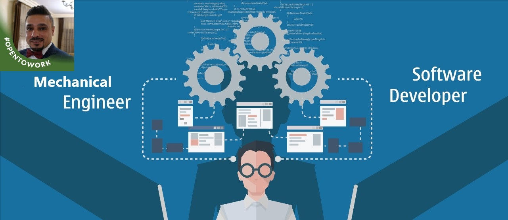

Education
- Secondary certificate from Al-ittihad Schools
- BSc of Mechanical Engineering from The University of Jordan
- Software Development Certificate from Luminus Technical University Powered By codefellows
10 years experienced MEP Engineer with a demonstrated history of working in the construction industry. Skilled in AutoCAD, HVAC, Plumbing, Firefighting, Mechanical buildings services, Computer-Aided Design.
MY CAREER OBJECTIVES
Working in a position within the professional mechanical engineering field and applying scientific and technical knowledge to the design, analysis, and construction of works for practical purpose. Also Studying Software Development as long as the whole world is turning to this technology.
